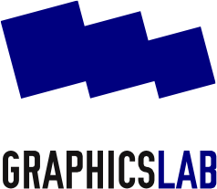

<html>
</html>
<!DOCTYPE html 
    PUBLIC "-//W3C//DTD XHTML 1.0 Transitional//EN" 
    "http://www.w3.org/TR/xhtml1/DTD/xhtml1-transitional.dtd">
<html xmlns="http://www.w3.org/1999/xhtml">
<head>
  <title>GraphicsLab</title>
  <meta http-equiv="content-type" content="text/html; charset=utf-8">
  <link rel='stylesheet' href='grafiklabor.css' type='text/css' />
</head>
<body>
<p><a href="../"></a></p>
<div id="content">
  <h1>Grafik<span class="blue">labor</span><br />
  <span style="font-size:x-large;">Dock18, Zurich</span></h1>

  <p>Am 6. Juni werden wir uns dem Desktoppublishing widmen!</p>

  <p>Für Neulinge wird es eine kurze Einführung in Scribus geben und – anschliessend – werden wir ein Faltblatt mit Scribus gestalten.</p>

  <h2>Material</h2>
  <ul>

      <li>Jeder bringt seinen Laptop mit. Es sind drei vorinstallierte Laptops vorhanden!</lI>
      <li>Wenn möglich hast du Scribus (http://www.scribus.net) installiert.</li>
  </ul>

  <h2>Kosten</h2>
  <ul>
    <li>Für 60.-- wirst du regulärer Student in der Dock18 Akademie für Medienkulturen der Welt und erhältst ein Studienbuch; alle anderen können eine Spende hinterlassen (5.-- ist ein vernünftigen Beitrag).</li>
  </ul>

  <h2>Wann und wo?</h2>
    <ul>
      <li>Im <a href="http://www.dock18.ch">Dock18</a>, <a href="http://www.rotefabrik.ch">Rote Fabrik</a>, <a href="http://map.search.ch/zuerich/rote-fabrik">Zürich</a></li>
      <li>Am 6. Juni von 14 bis 18 Uhr:
</div> <!-- content -->
<div id="sidebar">
<h2>GrafikLabor 04<br />
<span class="blue">6. Juni</span> 2010<br />
Desktop Publishing</h2>
</h2>
  <p></p>
  <p></p>
  <p></p>
  <p></p>
  <p></p>
</div>
</body>
</html>
